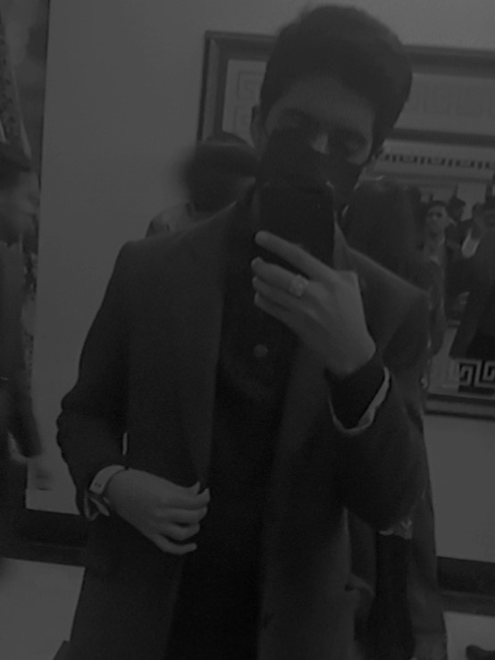

Hello,I'm a computer science student with strong passion for technology
and problem solving.As a student of this field i thrive on the challenges
and logical thinking trying to understad the underlying principles
of computing.
Assalamualaikum! I am Muhammad Abdullah Iftikhar and i am from BS CS section-A. I will keep it short and give a brief introduction to you about myself. My age is 18 and i am from the city of gardens Lahore. I am a Muslim. My date of birth is 10 may 2005.
I did my intermediate from PGC in pre-engineering and my matric from a unique group of institutions. I am an Ambitious student. I obtained 1016 marks in matric out of 1100 and i obtained 975 marks in intermediate out of 1100.
Currently i am doing bachelors in computer science from itu my first semester is almost over and i have been working hard towards acheiving my goal of being a succesful computer scientist.